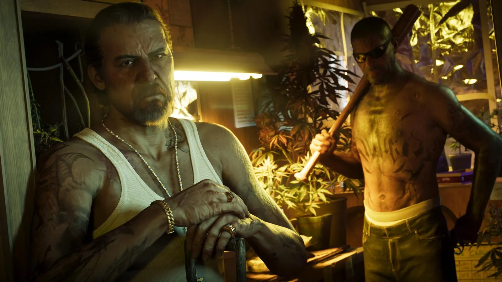
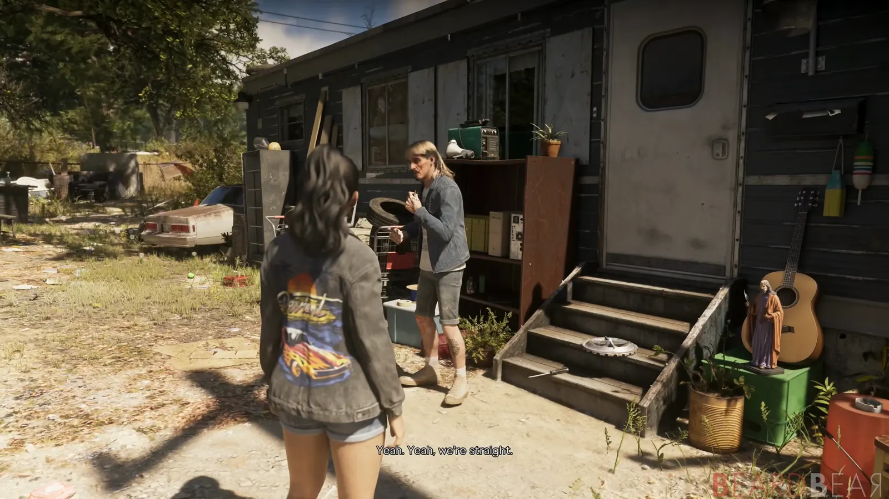
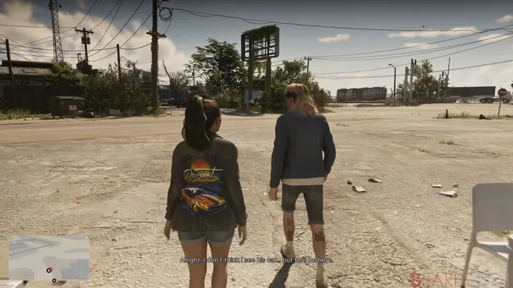
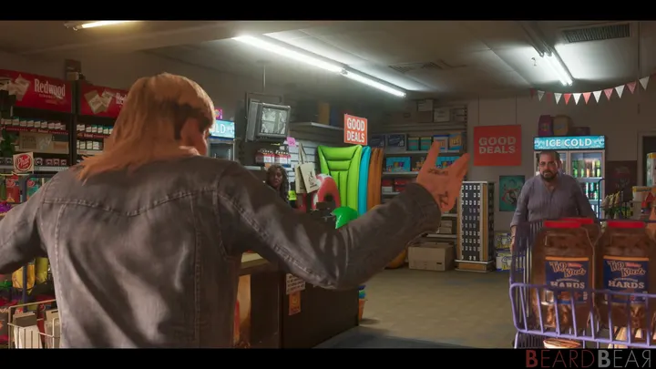
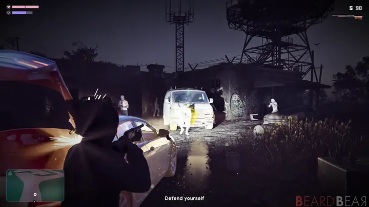

Slam Dunk: прохождение миссии GTA 6
Опубликовано:

Коротко
- Данк нашёл поставщика сильных обезболивающих для Джейсона — отставного «доктора Билла». План простой: дождаться Билла у магазина и заставить достать таблетки. Но Билл давно не выписывает рецепты, а его старые знакомые — банда Kolts.
- Глава 2, миссия 7 из 11. Играем за: Лусия.
- Награда: обезболивающие для Джейсона, Данк становится скупщиком, $1 700 на следующий день; около $1 000 с тела Билла.
Миссия коротко
| Глава | 2. Paradise Lost |
| Номер в сюжете | 7 |
| Играем за | Лусия |
| Кто даёт | Данк |
| Где начинается | трейлер Данка, Port Gellhorn |
| Условие | все предыдущие миссии главы 2 и второй звонок Данка |
| Награда | обезболивающие для Джейсона, Данк становится скупщиком, $1 700 на следующий день; около $1 000 с тела Билла |
| Переиграть | нельзя — сохраняйтесь вручную |

Где начинается
Прохождение по шагам
- Идите за Данком за мусорный бак у магазина и ждите Билла. Время сдвинется на день; Данк под прицелом сажает Билла в машину.
- Езжайте в доки на машине Билла — там ждут Kolts.
- Медленно за провожатым. Банда откроет ворота, а потом что-то заподозрит и начнёт стрелять.
- Вырывайтесь: быстро сдайте назад и уходите от погони.
- Догоните Билла — он выпрыгнет из машины и вырубится сам; его положат в багажник.
- Взлётная полоса к юго-западу от Port Gellhorn: Kolts нападают.
- Зачистите всех, включая тех, кто в зданиях. Держитесь укрытий, лечитесь Zombix. Данк заберёт таблетки в центральном здании.
- Отвезите Данка домой. Лусия сама отнесёт таблетки Джейсону.






Советы
- Обыщите тело Билла — около $1 000.
- Сначала пройдите Ambulance Chaser: после Slam Dunk скорую находит полиция, и задание пропадает.
- Если Данк долго не звонит, позвоните ему сами или займитесь другими делами главы 2.
- Медленно и из укрытий: Kolts на полосе много.
- После миссии Данк — скупщик в Port Gellhorn, а его звонок на следующий день отметит на карте две точки для ограблений.
Подробности и секреты
- Билл объясняет, что давно на пенсии и рецептов у него нет, но раньше он вёл дела с Kolts и звонит своему контакту Деклану (wiki.eso-ui, Game8).
- На взлётной полосе Kolts сразу стреляют в Билла и открывают огонь по Лусии и Данку (GTABase, wiki.eso-ui).
- Награда — таблетки для Джейсона, Данк как скупщик и $1 700 на следующий день (wiki.eso-ui).
- Дальше — Breakfast Run, когда Джейсон встанет на ноги.
Что можно пропустить
Можно пропустить: деньги на теле Билла (около $1 000).
Частые вопросы
Как начать Slam Dunk?
Пройти остальные миссии главы 2 и дождаться двух звонков Данка (задание Painkiller Supplier).
Что будет с Ambulance Chaser после Slam Dunk?
Задание пропадёт: полиция находит скорую. Пройдите Ambulance Chaser заранее.
Где таблетки в Slam Dunk?
В центральном здании на взлётной полосе к юго-западу от Port Gellhorn — их забирает Данк после боя.
Источники: PowerPyx, «GTA 6 Slam Dunk Walkthrough», «Painkiller Supplier», 19.11.2026; PC Gamer, «GTA 6 mission list», 19.11.2026; GTABase, Game8, MetaForge, games.gg, gta6notebook, wiki.eso-ui, theclick, TheDroidGuy, gamingpromax — Slam Dunk, 18–28.11.2026. Кнопки указаны для PS5, в скобках — Xbox. Названия миссий — как в английской версии игры.